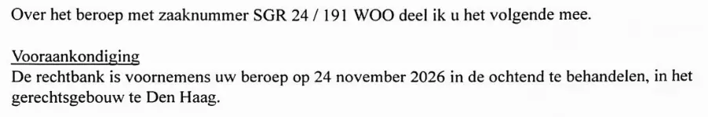

Preuve · Lettre
Tribunal de La Haye, préavis d’audience dans les recours Woo de Giltay, 28 septembre 2026
Le passage
« Le tribunal a l’intention d’examiner votre recours le 24 novembre 2026 dans la matinée, au palais de justice de La Haye. » Page 1, sous l’intitulé « Vooraankondiging » (préavis). La même phrase figure dans la lettre de la page 2. Traduit du néerlandais ; le texte original figure ci-dessous.
Texte original
“De rechtbank is voornemens uw beroep op 24 november 2026 in de ochtend te behandelen, in het gerechtsgebouw te Den Haag.” Les lignes de la numérisation sont ici réunies.

Pourquoi ce document compte
Dans cette lettre du 28 septembre 2026, le greffier du tribunal de La Haye annonce que le tribunal entend examiner le 24 novembre 2026 le recours de Giltay portant le numéro d’affaire SGR 24 / 191 WOO. WOO désigne la Wet open overheid, la loi néerlandaise qui régit le droit d’accès aux documents des pouvoirs publics. Une lettre de même teneur, datée du même jour, en page 2 du PDF, annonce pour la même matinée l’examen d’un second recours, SGR 24 / 7604 WOO. Ces lettres montrent qu’en 2026 Giltay agit devant le juge administratif pour obtenir la divulgation de documents des pouvoirs publics. Elles ne disent rien du fond ni de l’issue des affaires.
Provenance
- Document
- Deux lettres de même teneur du greffier, une par affaire
- Expéditeur
- Tribunal de La Haye, section de droit administratif, équipe administrative 2, La Haye
- Destinataire
- E.F. Giltay, La Haye (« ’s-Gravenhage »)
- Date
- 28 septembre 2026
- Référence
- Numéros d’affaire SGR 24 / 191 WOO (page 1) et SGR 24 / 7604 WOO (page 2)
- Objet
- « het beroep van E.F. Giltay te ’s-Gravenhage » (le recours d’E.F. Giltay, demeurant à La Haye)
- Signé
- Le greffier (« de griffier »), sans nom ni signature
- Langue
- Néerlandais
- Pages
- 2
Cité dans :
- l’essai « L’interdiction tombée, le livre debout » dans le chapitre (3) « Ce que révèle le livre : la dissimulation autour de Srebrenica »
- la biographie de l’auteur.
Document : https://
Dernière modification le 10 octobre 2026, consulté le 10 octobre 2026.

Cette page est une fiche de preuve du livre Le Général de dissimulation d’Edwin Giltay et du site web qui l’accompagne.